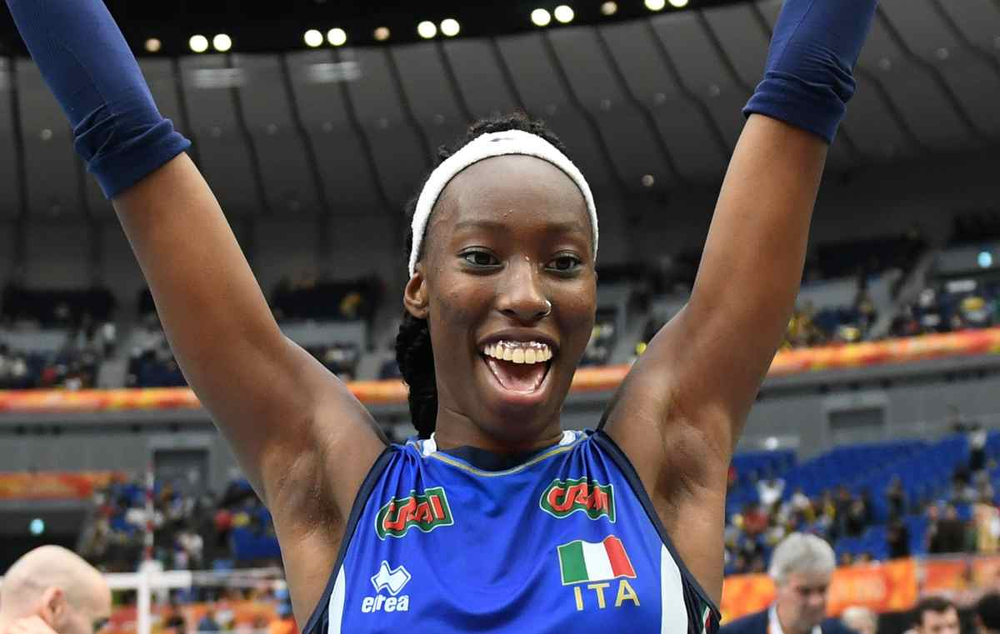

Paola Egonu nasce il 18 dicembre del 1998 a Cittadella in provincia di Padova. Figlia di genitori migrati nigeriani, il padre Ambrose (ex camionista di Lagos) e la madre Eunice (infermiera a Benin City) arrivano in Italia prima della nascita di Paola. La giovane, da sempre appassionata alla pallavolo, inizia a giocare da giovanissima a livello locale, per passare rapidamente in serie B1, A2 e infine in A1. La prestanza fisica e il talento straordinario della giovane Paola la portano fino in nazionale: prima nella Under-18 (2015) per poi passare alla nazionale maggiore italiana.
Ha incominciato a muovere i primi passi nella realtà pallavolistica locale di Cittadella. Nella stagione 2013-14 entra a far parte della squadra federale del Club Italia, in Serie B1: con lo stesso club, a cui resta legata per un totale di quattro annate, gioca, nella stagione 2014-15, in Serie A2 e, in quella 2015-16, in Serie A1; durante la terza giornata del campionato 2016-17 realizza, contro il San Casciano, un totale di 46 punti, miglior risultato di sempre in Serie A1[11]. Nella stagione 2017-18 viene ingaggiata dall'AGIL di Novara, sempre in Serie A1, aggiudicandosi la Supercoppa italiana 2017, due Coppe Italia, venendo premiata nell'edizione 2017-18 come MVP, e la Champions League 2018-19, terminata anch'essa con il riconoscimento individuale quale migliore giocatrice. Nell'annata 2019-20 si accasa all'Imoco di Conegliano, sempre in Serie A1, conquistando tre Supercoppe italiane, il campionato mondiale per club 2019, vincendo in entrambi i casi il premio di MVP, tre Coppe Italia, premiata come MVP nell'edizione 2020-21 e 2021-22, due scudetti e la Champions League 2020-21, anche in queste due ultime competizioni premiata come MVP: nel corso di gara 1 dei play-off scudetto della stagione 2020-21 realizza 47 punti, migliorando il record, che già le apparteneva, di punti realizzati da una giocatrice in una singola partita di Serie A1.
Nel 2015 ha fatto parte della nazionale Under-18, con cui ha vinto la medaglia d'oro al campionato mondiale 2015, ottenendo anche il premio come MVP. Tra il 2014 e il 2016 è stata convocata nella nazionale Under-19 e Under-20, vincendo, con quest'ultima, il bronzo al campionato mondiale 2015. Nel 2015 ha ottenuto le prime convocazioni nella nazionale maggiore italiana, con cui, nel 2017, ha vinto la medaglia d'argento al World Grand Prix, mentre, nel 2018, ha conquistato la medaglia d'argento al campionato mondiale, competizione in cui viene eletta miglior opposto. Un anno dopo, al campionato europeo 2019, ottiene la medaglia di bronzo. Nel 2021 viene scelta come portabandiera della bandiera olimpica per la cerimonia di apertura dei Giochi della XXXII Olimpiade di Tokyo, manifestazione durante la quale esce ai quarti di finale; nello stesso anno ottiene la medaglia d'oro al campionato europeo, risultando essere anche la miglior giocatrice.
